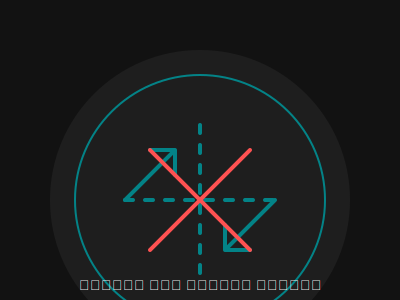

أنت غير متصل بالإنترنت
يبدو أنك غير متصل بالإنترنت حالياً. تحتاج إلى اتصال بالإنترنت لعرض هذه الصفحة.

جاري التحقق من حالة الاتصال...
نصائح للتحقق من اتصالك:
- تأكد من تشغيل بيانات الهاتف أو اتصال Wi-Fi
- تحقق من إشارة الشبكة في منطقتك
- حاول تشغيل وضع الطيران ثم إيقافه
- أعد تشغيل جهاز التوجيه (الراوتر) إذا كنت تستخدم Wi-Fi